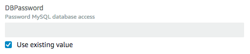

Atualizar pilhas diretamente
Quando você deseja implementar rapidamente atualizações em sua pilha, execute uma atualização direta. Com uma atualização direta, você envia um modelo ou parâmetros de entrada que especificam as atualizações dos recursos na pilha e o AWS CloudFormation imediatamente as implanta. Se quiser usar um modelo para fazer as atualizações, é possível modificar o modelo atual e armazená-lo localmente ou em um bucket do Amazon S3.
Para propriedades de recursos que não suportam atualizações, você deve manter os valores atuais. Para visualizar as alterações que o AWS CloudFormation fará em sua pilha antes de atualizá-la, use conjuntos de alterações. Para ter mais informações, consulte Atualizar pilhas usando conjuntos de alterações.
nota
Ao atualizar uma pilha, o AWS CloudFormation pode interromper os recursos ou substituir os recursos atualizados, dependendo de quais propriedades você atualiza. Para obter mais informações sobre os comportamentos de atualização de recursos, consulte Atualizar comportamentos de recursos da pilha.
Para atualizar uma pilha de AWS CloudFormation (console)
-
Faça login no AWS Management Console e abra o console AWS CloudFormation em https://console.aws.amazon.com/cloudformation
. -
No console do AWS CloudFormation
, na lista de pilhas, selecione a pilha em execução que você deseja atualizar. -
No painel de detalhes da pilha, escolha Update (Atualizar).
-
Se você não modificou o modelo de pilha, selecione Usar modelo atual e escolha Próximo.
Se você modificou o modelo, selecione Replace current template (Substituir modelo atual) e especifique a localização do modelo atualizado na seção Specify template (Especificar modelo):
-
Para um modelo armazenado localmente em seu computador, selecione Upload a template file (Fazer upload de um arquivo de modelo). Selecione Escolher arquivo para navegar até o arquivo e selecioná-lo, depois escolha Próximo.
nota
Se você carregar um arquivo de modelo local, o AWS CloudFormation o carregará em um bucket do Amazon Simple Storage Service (Amazon S3) na sua conta da AWS. Se você ainda não tiver um bucket do S3 que foi criado pelo AWS CloudFormation, ele criará um bucket exclusivo para cada Região na qual você faz upload de um arquivo de modelo. Se você já tiver um bucket do S3 que foi criado pelo AWS CloudFormation em sua conta da AWS, o AWS CloudFormation adicionará o modelo a esse bucket.
Considerações para se ter em mente sobre buckets do S3 criados pelo AWS CloudFormation
-
Os buckets são acessíveis a qualquer pessoa com permissões do Amazon S3 em sua conta da AWS.
-
O AWS CloudFormation cria os buckets com a criptografia no lado do servidor habilitada por padrão, criptografando, assim, todos os objetos armazenados no bucket.
Gerencie diretamente as opções de criptografia para buckets criados pelo AWS CloudFormation, por exemplo, usando o console do Amazon S3, em https://console.aws.amazon.com/s3/
, ou a AWS CLI. Para obter mais informações, consulte Criptografia padrão do Amazon S3 para buckets do S3, no Guia do usuário do Amazon Simple Storage Service. -
É possível utilizar seu próprio bucket e gerenciar suas permissões carregando modelos manualmente no Amazon S3. Ao criar ou atualizar uma pilha, especifique o URL de um arquivo de modelo do Amazon S3.
-
-
Para um modelo armazenado no bucket do Amazon S3, escolha Amazon S3 URL (URL do Amazon S3). Digite ou cole o URL do modelo e escolha Next (Próximo).
Se tiver um modelo em um bucket com versionamento habilitado, você poderá indicar uma versão específica do modelo, como
https://s3.amazonaws.com/templates/myTemplate.template?versionId=123ab1cdeKdOW5IH4GAcYbEngcpTJTDW. Para obter mais informações, consulte Gerenciar objetos em um bucket habilitado para versionamento no Guia do usuário do Amazon Simple Storage Service.
-
-
Se o seu modelo contém parâmetros, na página Especificar detalhes da pilha, é possível inserir ou modificar os valores dos parâmetros, depois escolha Próximo.
O AWS CloudFormation preenche cada parâmetro com o valor que está definido atualmente na pilha, com exceção de parâmetros declarados com o atributo
NoEcho. No entanto, ainda é possível usar os valores atuais ao marcar Usar valor existente.Para mais informações sobre o uso de
NoEchopara mascarar informações confidenciais, além do uso de parâmetros dinâmicos para gerenciar segredos, consulte a prática recomendada Não incorporar credenciais em seus modelos. -
Na página Configure stack options (Configurar opções da pilha), é possível atualizar as tags e as permissões aplicadas à pilha e modificar opções avançadas como política de pilha, configurar a reversão ou atualizar o tópico de notificação do Amazon SNS.
Para obter mais informações sobre essas opções, consulte Configurar opções de pilha do AWS CloudFormation.
Escolha Próximo.
-
Analise as informações e as alterações da pilha que você enviou.
Verifique se você enviou as informações corretas, como os valores de parâmetro ou modelo de URL correto. Se o seu modelo contém recursos do IAM, selecione I acknowledge that this template may create IAM resources (Eu reconheço que este modelo pode criar recursos do IAM) para especificar que você deseja usar recursos do IAM no modelo. Para obter mais informações sobre o uso de recursos do IAM em modelos, consulte Controlar o acesso com o AWS Identity and Access Management.
Na seção Change set preview (Visualização do conjunto de alterações), verifique se o AWS CloudFormation fará todas as alterações esperadas. Por exemplo, você pode verificar se o AWS CloudFormation adiciona, remove e modifica os recursos que você pretende adicionar, remover ou modificar. O AWS CloudFormation gera essa pré-visualização criando um conjunto de alterações para a pilha. Para ter mais informações, consulte Atualizar pilhas usando conjuntos de alterações.
-
Quando estiver satisfeito com as suas alterações, clique em Update stack (Atualizar pilha).
nota
Nesse ponto, você também tem a opção de visualizar o conjunto de alterações para rever as atualizações propostas mais cuidadosamente. Para isso, escolha View change set (Visualizar conjunto de alterações) em vez de Update stack (Atualizar pilha). O CloudFormation mostra o conjunto de alterações gerado com base nas suas atualizações. Quando estiver pronto para executar a atualização da pilha, clique em Executar.
O CloudFormation exibe a página de detalhes para a sua pilha, com o painel Events (Eventos) selecionado. Sua pilha agora tem um status de UPDATE_IN_PROGRESS. Depois que o CloudFormation tiver concluído com êxito a atualização da pilha, ele definirá o status da pilha como UPDATE_COMPLETE.
Caso a atualização da pilha falhe, o CloudFormation reverterá automaticamente as alterações e definirá o status como UPDATE_ROLLBACK_COMPLETE.
nota
Você pode cancelar uma atualização enquanto ela estiver no estado UPDATE_IN_PROGRESS. Para ter mais informações, consulte Cancelar uma atualização de pilha.
Para atualizar uma pilha do AWS CloudFormation (AWS CLI)
-
Use o comando
aws cloudformation update-stackpara atualizar diretamente uma pilha. Você especifica a pilha, os recursos e os valores de parâmetro que você deseja atualizar e, se quiser usar um modelo atualizado, o nome do modelo.O exemplo a seguir atualiza o modelo e parâmetros de entrada para a pilha
mystack:$aws cloudformation update-stack --stack-namemystack\ --template-url https://s3.amazonaws.com/sample/updated.template \ --parameters ParameterKey=VPCID,ParameterValue=SampleVPCID ParameterKey=SubnetIDs,ParameterValue=SampleSubnetID1\\,SampleSubnetID2O exemplo a seguir atualiza apenas os valores do parâmetros
SubnetIDsda pilhamystack:$aws cloudformation update-stack --stack-namemystack\ --use-previous-template \ --parameters ParameterKey=VPCID,UsePreviousValue=true ParameterKey=SubnetIDs,ParameterValue=SampleSubnetID1\\,UpdatedSampleSubnetID2O exemplo a seguir adiciona dois tópicos de notificação de pilha à pilha
mystack:$aws cloudformation update-stack --stack-namemystack\ --use-previous-template --notification-arns \ "arn:aws:sns:us-east-1:12345678912:mytopic" "arn:aws:sns:us-east-1:12345678912:mytopic2"O exemplo a seguir remove todos os tópicos de notificação de pilha da pilha
mystack:$aws cloudformation update-stack --stack-namemystack\ --use-previous-template --notification-arns []